Přehled, architektura a srovnání vývojových prostředí pro virtuální a smíšenou realitu
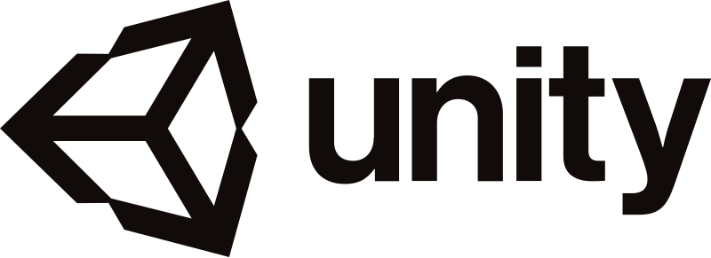
•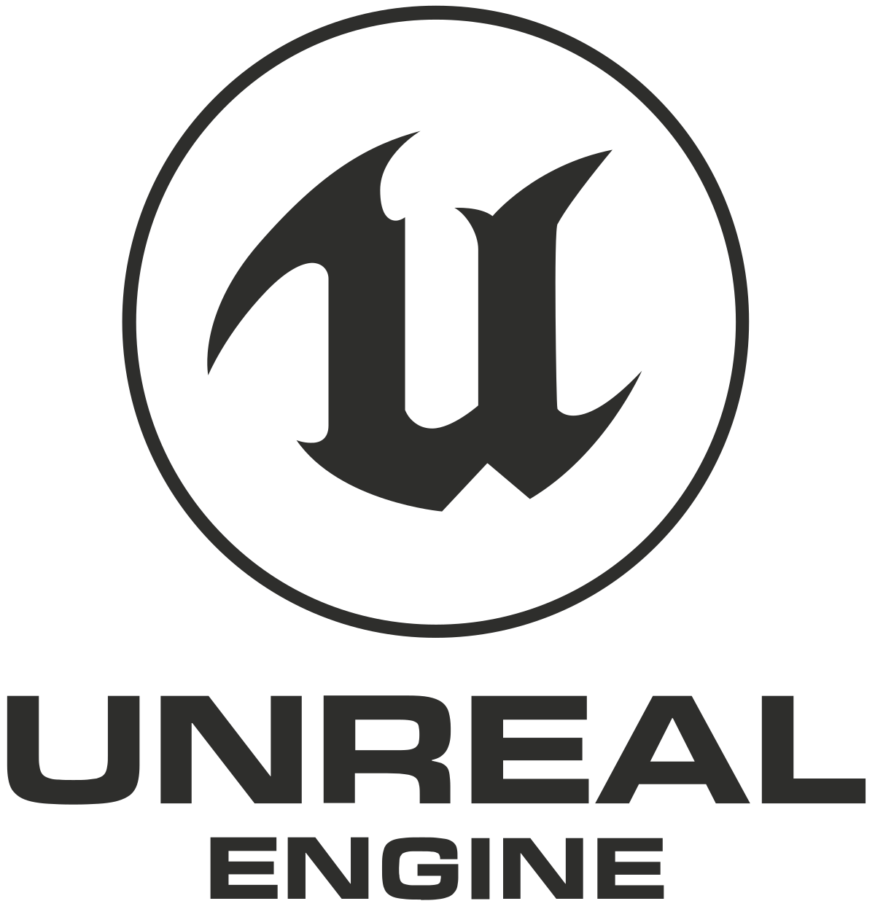
•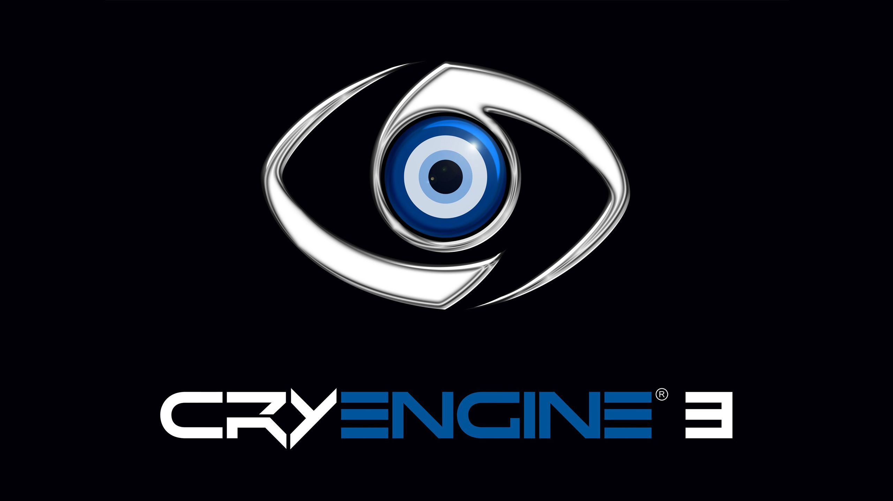
V minulosti museli vývojáři integrovat proprietární rozhraní pro každé zařízení zvlášť: Oculus SDK, SteamVR / OpenVR, Windows Mixed Reality nebo HTC Vive Wave. To vedlo k vendor lock-in a neudržitelnému kódu.
OpenXR je bezplatný, otevřený průmyslový standard podporovaný společnostmi Meta, Valve, Microsoft, Apple, Sony i Google. Verze OpenXR 1.1 sjednocuje klíčová rozšíření přímo do jádra (multi-view, hand tracking, foveated rendering a spatial anchors).
openxr_loader.dll / .so detekuje aktivní runtime.
Motion-to-Photon (M2P) latence: Čas od fyzického pohybu hlavy po rozsvícení (pixelů) fotonů na displeji musí být striktně pod 20 ms. Překročení způsobuje vestibulární konflikt a okamžitou nevolnost (kinetózu).
Pokud engine nestihne vyrenderovat snímek včas, zapojí se asynchronní warping na compositing vrstvě:
Reprojekce není náhrada za špatnou optimalizaci. Vede ke zvlnění hran (wobbling), chybám v okluzi a duchům při rychlém pohybu rukou.
Vývoj od roku 2004 (původně vývojové prostředí pro Mac OS X postavené na běhovém prostředí Mono). Cílem bylo zpřístupnit herní a interaktivní 3D vývoj široké veřejnosti.
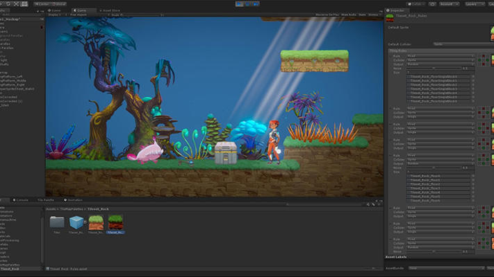
Horší práce se světlem a materiály out-of-the-box: Dosažení filmového fotorealismu vyžaduje v Unity značné úsilí a expertní ladění osvětlovacích modelů ve srovnání s Unreal Engine.
Není volně dostupný zdrojový kód: C++ jádro enginu je uzavřené. Přístup ke zdrojovému kódu je možný pouze pro enterprise partnery za velmi vysoké licenční poplatky.
Historicky chybělo vestavěné vizuální programování. Nástroj Bolt byl integrován až později, ale nedosahuje popularity ani možností Unreal Blueprints.
Garbage Collector spikes: Automatický úklid paměti v C# může způsobit mikrozáseky (stuttering). Ve VR, kde je nutné držet stabilních 72/90/120 FPS, může jakýkoliv drop snímku vyvolat nevolnost (kinetózu).
Méně velkých AAA blockbusterů: Většina největších herních studií volí pro velké fotorealistické projekty Unreal nebo vlastní interní engine.
Přechod na modulární balíčky často vede k „dependency hell“, kde se jednotlivé experimentální verze balíčků navzájem vylučují nebo po aktualizaci rozbijí projekt.
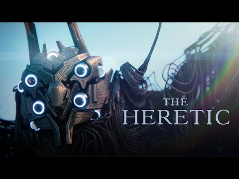
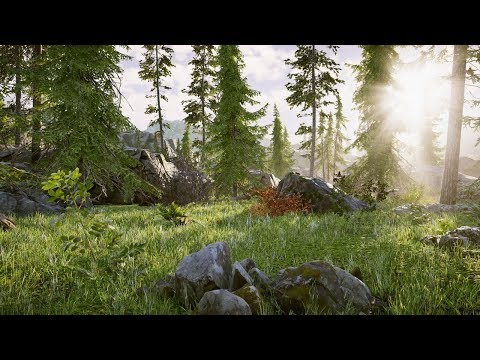
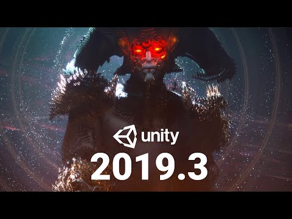
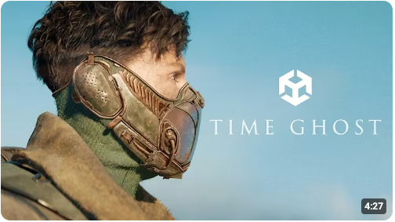
Vyvíjen společností Epic Games od roku 1998 (původně pro průlomovou 3D FPS hru Unreal pod vedením Tima Sweeneyho). Dnes představuje absolutní špičku v oblasti fotorealistické 3D grafiky.
Masivně využívaný nejen v herním AAA průmyslu, ale i v Hollywoodu (virtuální produkce seriálu The Mandalorian na obřích LED stěnách StageCraft), architektuře a automobilovém průmyslu.
UPROPERTY, UFUNCTION, UCLASS).Menší komunita pro začínající vývojáře než u Unity, méně učebnic a specializovaných návodů. Dokumentace bývá u pokročilých témat nekompletní a vyžaduje studium C++ kódu.
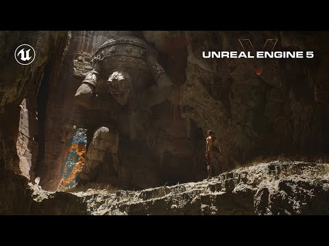
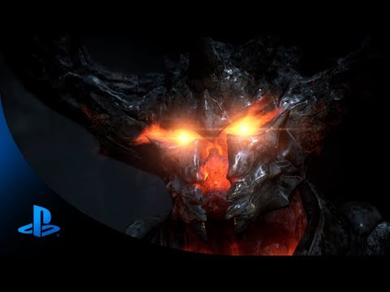
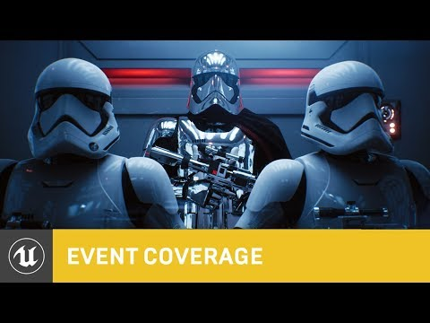
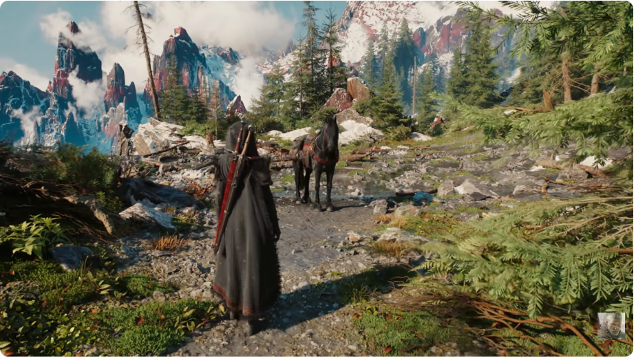
2D a 3D free open-source engine šířený pod MIT licencí. Žádné licenční poplatky, žádná procenta z tržeb.
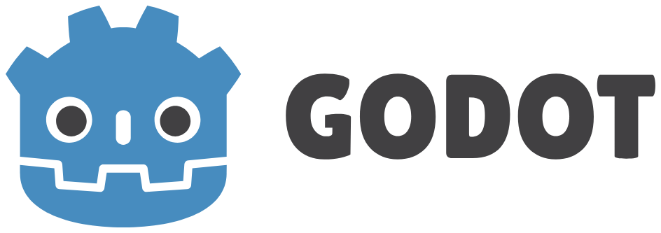
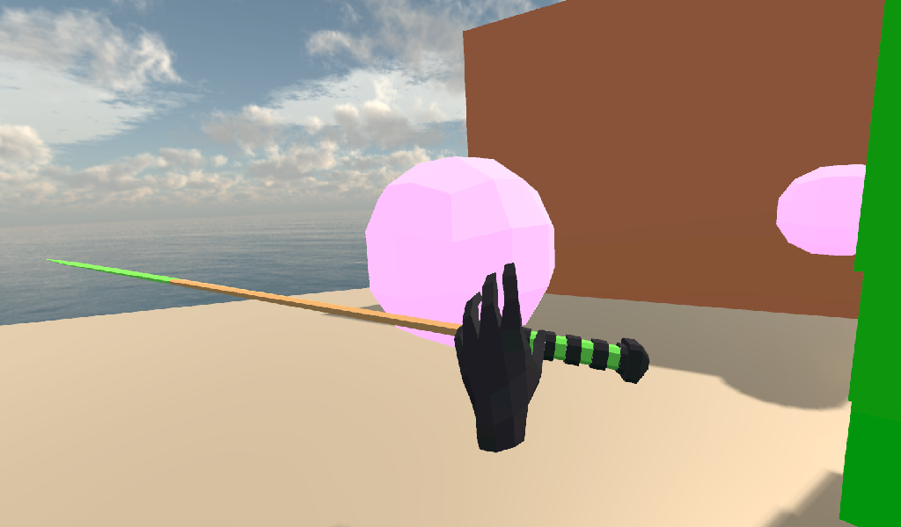
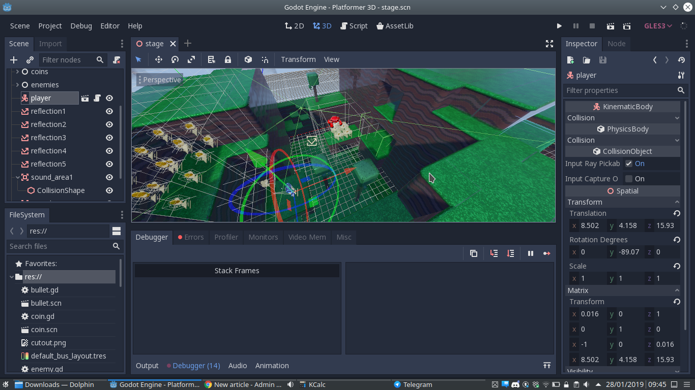
Open-source JavaScript knihovna vyvinutá v laboratořích Mozilly. Postavená nad Three.js a WebGL/WebXR API.
<html>
<head>
<meta charset="utf-8">
<title>Hello, WebVR! • A-Frame</title>
<script src="https://aframe.io/releases/1.4.0/aframe.min.js"></script>
</head>
<body>
<a-scene background="color: #FAFAFA">
<!-- Krychle s rotací a stínem -->
<a-box position="-1 0.5 -3" rotation="0 45 0"
color="#4CC3D9" shadow></a-box>
<!-- Koule -->
<a-sphere position="0 1.25 -5" radius="1.25"
color="#EF2D5E" shadow></a-sphere>
<!-- Válec -->
<a-cylinder position="1 0.75 -3" radius="0.5"
height="1.5" color="#FFC65D" shadow></a-cylinder>
<!-- Podlaha / rovina -->
<a-plane position="0 0 -4" rotation="-90 0 0"
width="4" height="4" color="#7BC8A4" shadow></a-plane>
</a-scene>
</body>
</html>Platforma umožňující vytvářet, editovat a programovat kompletní virtuální světy přímo s nasazeným headsetem v kooperaci s ostatními uživateli.
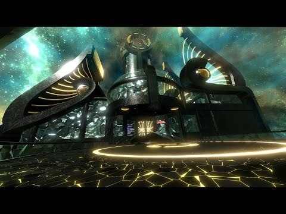
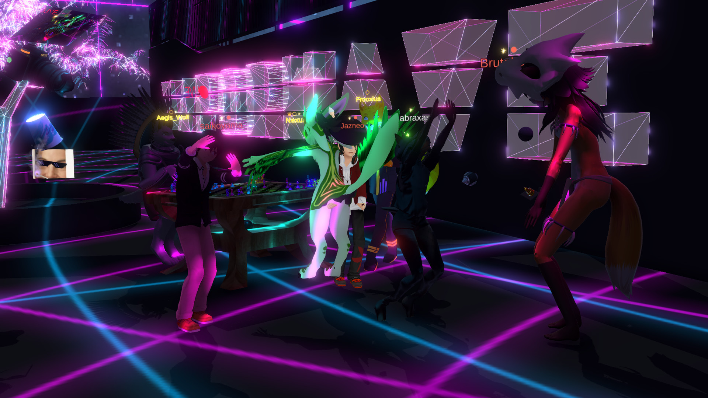
Přehledné porovnání klíčových parametrů pro volbu optimálního vývojového prostředí:
| Engine / Nástroj | Jazyky & Skriptování | Licence & Cena | VR Ekosystém & Silné stránky | Kdy zvolit pro projekt? |
|---|---|---|---|---|
| Unity3D | C# (.NET) Visual Scripting |
Zdarma do $200k obratu, poté roční předplatné |
Jednička na trhu mobilního VR (Quest), masivní Asset Store, XR Interaction Toolkit. | Doporučeno pro většinu VR/AR projektů, mobilní headsety a začátečníky. |
| Unreal Engine | C++ & Blueprints | Zdarma, 5 % royalty až po překročení zisku $1M hrubého | Absolutní špička fotorealismu, Nanite & Lumen, Quixel Megascans, filmová kvalita. | High-end PCVR tituly, fotorealistické simulace, virtuální produkce a AAA hry. |
| Godot Engine | GDScript, C#, C++ | 100% Free (MIT) žádné poplatky |
Extrémně lehký (~50 MB), bleskový start, nezávislost na korporacích, OpenXR. | Indie tituly, open-source projekty, výuka a týmy s nulovým rozpočtem. |
| A-Frame (WebXR) | HTML & JavaScript Three.js ECS |
100% Free (MIT) | Okamžitá dostupnost v prohlížeči přes URL, žádná instalace, webové AR/VR. | Webové showroomy, interaktivní prezentace na konferencích, e-commerce v AR. |
| Neos VR / Resonite | LogiX (ve VR) & C# | Zdarma na Steamu | Editace zevnitř VR prostoru v kooperativním multiplayeru v reálném čase. | Kolaborativní setkávání, výuka v imerzi (BI-VR1), tvorba metaverzních světů. |